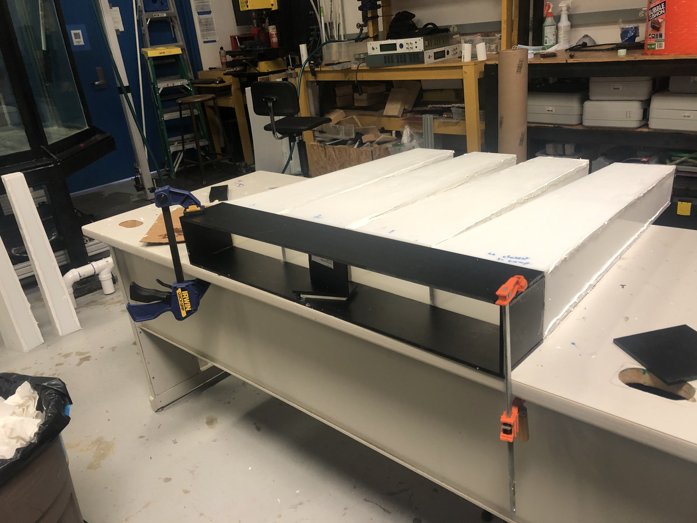

Gust generator design
An experimental apparatus design to generate a tranverse gust in a water-tow tank facility
Introduction
unsteady gusty conditions lead to flight instability and structural problems. Thus, mitigation of unsteady wing-gust encounters is one of the main current areas of research in the field of aerodynamics. The simulation of a gust is necessary to experimentally investigate unsteady wing-gust encounter. In this project, I designed and built a gust generator for the UMD water-tow tank facility. The gust generator is analogous to an open-test section water tunnel. Water flow is driven using a centrifugal pump and is guided to the gust outlet. The water exiting the outlet forms the gust region the wing encounters as it is being towed.
Design
The water exits the pump's discharge side and is guided to the diffuser section by PVC piping. The diffuser sections expand the flow gradually to avoid the onset of flow separation and the formation of recirculation zones. The fours diffusers merge into the mixing chamber that creates some travel distance for the flow to undergo before further treatment. This gives enough time for the flows to merge. The flow then turns 90 degrees via the aid of turning vanes into the gust outlet. The flow passes through a section of 1/8" honeycomb flow straightener on its way out of the system to remove flow tilt as well as break down large turbulent structures.
 The Diffuser-pipe adapter is a section that provides the flow a smooth transition from a circular pipe cross-section to a rectangular diffuser cross-section.
The Diffuser-pipe adapter is a section that provides the flow a smooth transition from a circular pipe cross-section to a rectangular diffuser cross-section.
 The diffuser section expands the flow gradually to increase the gust volume region. The diffuser has a maximum equivalent cone angle of 6° to avoid the onset of flow separation at the walls. This ensures a smooth uniform expansion of the flow. The diffuser length is chosen such that the the area expansion ratio is limited to 3 limiting the probability of flow separation.
The diffuser section expands the flow gradually to increase the gust volume region. The diffuser has a maximum equivalent cone angle of 6° to avoid the onset of flow separation at the walls. This ensures a smooth uniform expansion of the flow. The diffuser length is chosen such that the the area expansion ratio is limited to 3 limiting the probability of flow separation.
 The adapters were 3D printed using and FDM printer and PLA plastic. The diffuser sections we built out of cut HDPE plastic panels due to their cheap cost, good marine profile, and smooth surface. 3M 5200 marine adhesive seealant was used to seal the diffuser section seams. Epoxy resin was use to join the adpater and diffuser section. The picture on the right is a top view of the adapter and diffuser section.
The adapters were 3D printed using and FDM printer and PLA plastic. The diffuser sections we built out of cut HDPE plastic panels due to their cheap cost, good marine profile, and smooth surface. 3M 5200 marine adhesive seealant was used to seal the diffuser section seams. Epoxy resin was use to join the adpater and diffuser section. The picture on the right is a top view of the adapter and diffuser section.
The mixing chamber and the gust outlet were built out of Delrin plastic sheets. Delrin was chosen because it is easy to machine, has a smooth surface, and is naturally matte black which would minimize laser sheet reflection problems during Particle Image Velocimtery (PIV) experiments. The diffuser sections were not built of the same material because it is expensive and thus unafforadable for larger sections. The plastic sheets were joined using epoxy resin.
 A 1" inch" thick, 1/8" cell Aluminum honey comb sheet is mounted at the end of the gust outlet to straighten the flow. The length to cell diameter ratio of the honeycomb cell is 8 which ensures proper flow straightening. The honey comb also serves the purpose of breaking down any remaining larger scale turbulent structures. Usually, a finer screen mesh section is introcued after the honey comb to break smaller turbulent structures and make the flow more uniform. However, the pressure drop introduced by the screen is too large and would lead to unaccaptably slow gust exit velocity for the water pump we have.
A 1" inch" thick, 1/8" cell Aluminum honey comb sheet is mounted at the end of the gust outlet to straighten the flow. The length to cell diameter ratio of the honeycomb cell is 8 which ensures proper flow straightening. The honey comb also serves the purpose of breaking down any remaining larger scale turbulent structures. Usually, a finer screen mesh section is introcued after the honey comb to break smaller turbulent structures and make the flow more uniform. However, the pressure drop introduced by the screen is too large and would lead to unaccaptably slow gust exit velocity for the water pump we have.
 The turning manifold utilizes turning vanes to gently turn the flow 90° to create the tranverse gust. The turning vanes consist of 90° arcs with a large, 1" radius to minimze the risk of flow separation as the flow turns. tangents at either ends of the vanes are added to ensure the flow enter and exit the turns at the right angles. Turning vanes without these tangents were tested and the flow exiting the outlet was found to be tilted.
The turning manifold utilizes turning vanes to gently turn the flow 90° to create the tranverse gust. The turning vanes consist of 90° arcs with a large, 1" radius to minimze the risk of flow separation as the flow turns. tangents at either ends of the vanes are added to ensure the flow enter and exit the turns at the right angles. Turning vanes without these tangents were tested and the flow exiting the outlet was found to be tilted.
 The chord to vane spacing ratio is 25% which has been determined by Salter* to produce a loss coefficient as low as 0.06. The turning manifold was printed using an FDM 3D printer and black PLA. The black PLA is chosen to minimize laser sheet reflection problems.
The chord to vane spacing ratio is 25% which has been determined by Salter* to produce a loss coefficient as low as 0.06. The turning manifold was printed using an FDM 3D printer and black PLA. The black PLA is chosen to minimize laser sheet reflection problems.
Salter, C., "Experiments on Thin Turning Vanes," ARC R&M 2469, Oct. 1946.
Testing
In progress...